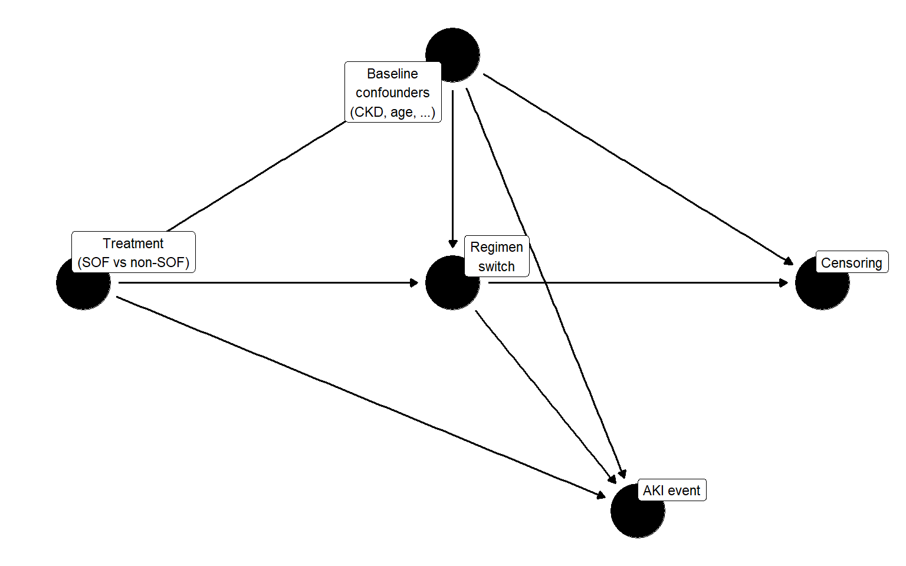
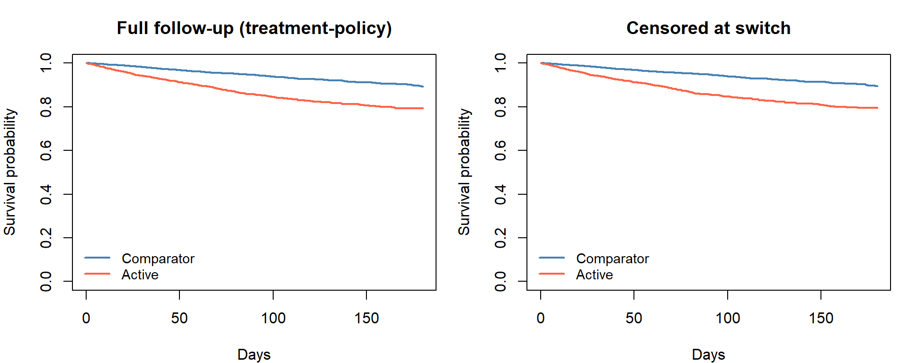
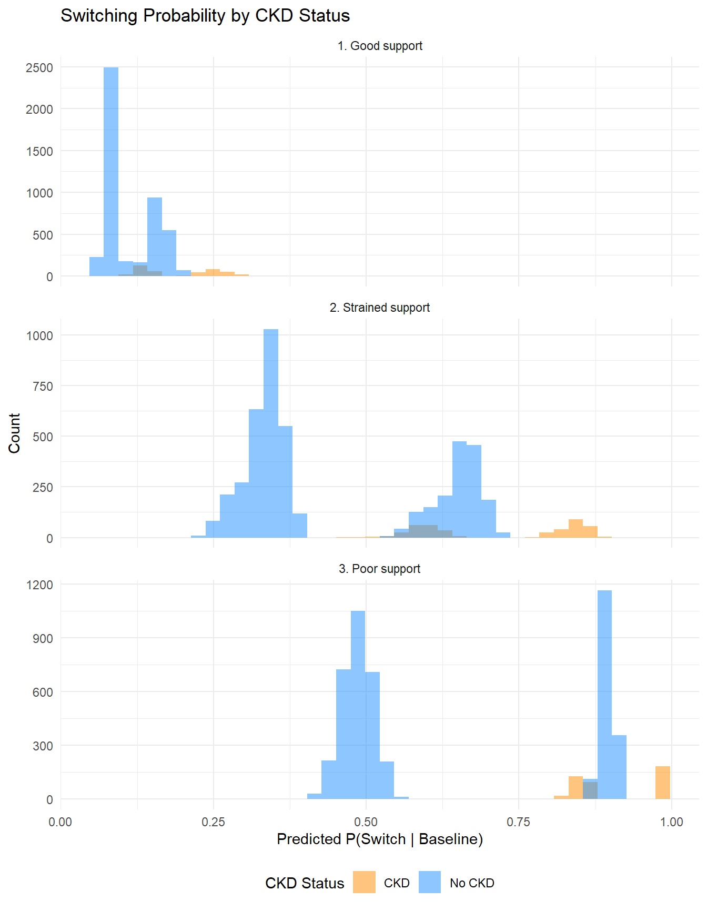
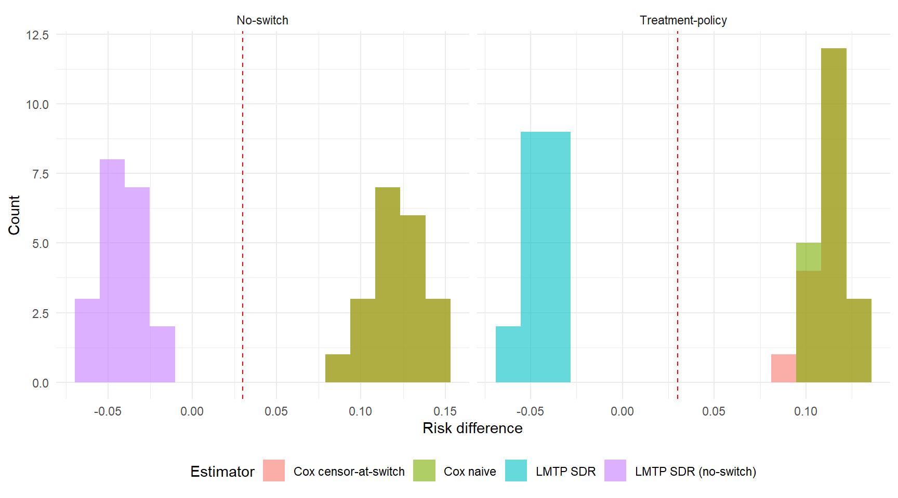
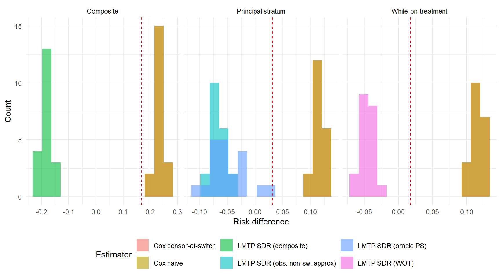

| Quantity | Value |
|---|---|
| Sample size | 10,000 |
| 180-day event rate | 0.082 |
| Switching rate | 0.116 |
| Switching rate (active, CKD) | 0.218 |
| Switching rate (comparator) | 0.088 |
| Median follow-up (days) | 62 |
Estimand–Estimator Mismatch in Time-to-Event Safety Analyses
A simulation study using longitudinal targeted learning
Introduction
Post-marketing safety analyses routinely ask whether a drug increases the risk of an adverse event. When treatment switching occurs during follow-up—and when switching is driven by evolving clinical indicators that also affect the outcome—the answer depends on how switching is handled. The ICH E9(R1) addendum (2019) formalises this dependence through the estimand framework, requiring that each analysis specify the population, treatment, outcome, intercurrent events, and the strategy used for each intercurrent event.
Different strategies define different causal quantities. A treatment-policy strategy follows all patients from initiation regardless of switching; a hypothetical strategy models a world where switching does not occur; a while-on-treatment strategy restricts attention to the period before switching. Each question has clinical relevance, and each requires a compatible estimator.
In practice, analysts frequently apply Cox regression without verifying that the model’s target—a conditional hazard ratio—corresponds to the intended estimand. This paper examines the consequences of that mismatch using a simulation study built around a hepatitis B safety scenario. We compare conventional Cox analyses to estimation via the longitudinal modified treatment policy (LMTP) framework, which directly targets marginal risk contrasts under specified interventions. The analysis concentrates on two estimands—treatment-policy and hypothetical no-switch—while reporting results for three additional strategies, and illustrates how the same data yield different estimates depending on the strategy employed and the degree to which the estimator matches it.
We follow the causal roadmap for real-world evidence (Dang et al. 2023; Petersen 2014), concentrating on estimand definition, identifiability assessment, and estimator selection.
The clinical motivation comes from the hepatitis B nephrotoxicity literature comparing tenofovir disoproxil fumarate (TDF) and entecavir (ETV). TDF can cause proximal tubular toxicity and decline in kidney function during long-term therapy. A systematic review reported that TDF was associated with greater increases in serum creatinine and reductions in estimated glomerular filtration rate during the first 6–24 months of therapy relative to ETV, although the effect was generally modest (Lee et al. 2019). Real-world cohort studies report a higher risk of kidney function decline among TDF patients during early follow-up, particularly among individuals with baseline renal risk factors (Jung et al. 2022; Mak et al. 2022). These findings suggest a pattern of modestly elevated early renal risk that attenuates over longer follow-up. The simulation incorporates a non-proportional treatment effect structure reflecting this empirical pattern: an early hazard ratio above one and a later hazard ratio closer to the null.
Motivating Setting
The simulation draws on concerns about nephrotoxicity in tenofovir-containing hepatitis B regimens relative to entecavir-based alternatives. Treatment assignment in the simulated cohort is confounded by baseline CKD, cirrhosis, and age. The primary intercurrent event is informative treatment switching: patients on the active regimen who develop early renal signals may switch to the comparator. Because CKD drives both switching and renal failure, switching is informative.
Simulation Design
Data-generating process
The function generate_hep_data() produces cohorts with confounded treatment assignment, a piecewise-exponential event process with non-proportional hazards (HR = 1.30 before day 90; HR = 0.90 after), and informative switching driven by treatment and CKD. The non-proportional structure reflects the clinical pattern reported in the hepatitis B nephrotoxicity literature: TDF increases early renal risk, which attenuates over longer follow-up. The simulation uses a late-period hazard ratio slightly below one (HR = 0.90) to create a non-proportional structure, though the empirical evidence for late-period reversal is limited. When a patient switches, the post-switch event hazard changes to reflect the new treatment. Administrative censoring may depend on baseline risk when dep_censor = TRUE.
One dataset, generated under the treatment-policy regime (switching occurs, modifies the hazard, does not censor), supports all five estimand analyses. The raw timing variables—event_time, switch_time, censor_admin—are retained, and the helper function derive_estimand() redefines follow_time and event for each strategy. For the no-switch truth, a separate dataset is generated with switching suppressed entirely (switch_on = FALSE).

Known truth
Because the DGP is fully specified, true marginal risks can be computed by generating large counterfactual datasets (N = 500,000 per arm) under each policy, with no dependent censoring.
| Strategy | Risk (active) | Risk (comparator) | Risk difference | Marginal HR |
|---|---|---|---|---|
| Treatment-policy | 0.1679 | 0.1379 | 0.0300 | 1.2477 |
| Hypothetical no-switch | 0.1679 | 0.1379 | 0.0300 | 1.2477 |
| While-on-treatment | 0.1417 | 0.1245 | 0.0172 | 1.2828 |
| Composite | 0.4528 | 0.2849 | 0.1679 | 1.8079 |
| Principal stratum | 0.1618 | 0.1306 | 0.0312 | 1.2708 |
The treatment-policy risk difference is positive: the active drug causes early harm (HR = 1.30 before day 90), and although switching to the comparator reduces the subsequent hazard, the accumulated early risk is not fully offset. Under the no-switch strategy, where patients remain on their assigned treatment for the full 180 days, the risk difference reflects the full non-proportional hazard structure (HR = 1.30 early, HR = 0.90 late). Because the late-period hazard ratio falls below 1, sustained treatment without switching partially offsets the early harm. The no-switch risk difference may differ from the treatment-policy difference depending on the magnitude of the post-switch hazard change; in the current DGP, the two are nearly identical. The composite strategy produces the largest risk difference because the active arm experiences substantially more switching, and switching itself counts as an event.
The while-on-treatment truth differs from the no-switch truth because follow-up is truncated at switching. Subjects who switch before 180 days contribute only their pre-switch person-time; the 180-day risk is computed under this truncation rule, not as a conditional risk among non-switchers. The principal stratum further restricts to the latent subpopulation who would not switch under either treatment assignment.
When would treatment-policy and no-switch truths diverge?
In the current DGP, the treatment-policy and no-switch risk differences are nearly identical. This is because the post-switch hazard change is modest (from HR = 0.90 to HR = 1.0 for active-to-comparator switchers) and switching rates are moderate (~12%). The population-level impact of switching on 180-day risk is therefore small.
The two estimands would diverge meaningfully in settings where switching has a large direct effect on subsequent outcomes. Consider, for instance, a DGP with switching rates of 30–40% within 180 days, a sustained treatment hazard ratio of 2.0 that drops to 1.0 upon switching, and predominantly unidirectional switching from active to comparator. Under these conditions, the treatment-policy estimand would show a smaller risk difference than the no-switch estimand, because switching mitigates accumulated harm in the active arm. A substantial fraction of active-arm patients would avoid the event by switching early, reducing the treatment-policy risk. The no-switch estimand, by contrast, would force all active-arm patients to remain on the harmful treatment for the full follow-up, producing a larger risk difference.
Treatment crossover in oncology: a canonical example
The tension between treatment-policy and no-switch estimands is particularly acute in oncology trials where patients randomised to the control arm are permitted to cross over to the experimental treatment after disease progression. This design is common when withholding a promising therapy from progressing patients is considered unethical, but it creates a structural problem for the analysis.
Under the treatment-policy estimand, patients are followed as randomised regardless of crossover. If the experimental drug is effective, control-arm crossover patients benefit from it after progression, and their subsequent survival improves relative to what it would have been without crossover. The treatment-policy survival difference between arms is therefore attenuated: the experimental arm’s advantage is diluted because the control arm partially receives the same treatment. Regulatory agencies evaluating the drug face a dilemma: the intent-to-treat analysis is unbiased for the treatment-policy question, but that question may understate the drug’s efficacy in a world where patients do not have access to the experimental treatment outside the trial.
The no-switch (hypothetical) estimand asks what the survival difference would have been if no crossover had occurred. This is the quantity most relevant for drug approval decisions, because it estimates the benefit of making the drug available as a first-line treatment—the counterfactual where control patients never receive it. The no-switch risk difference is typically larger than the treatment-policy difference, because it removes the crossover-induced attenuation.
Which estimand is appropriate depends on the regulatory and clinical question. For health technology assessment—where the decision is whether to reimburse the drug as first-line therapy—the no-switch estimand is often preferred, because it reflects the policy-relevant comparison: a world where the drug is available versus a world where it is not (Latimer et al. 2014; Latimer 2015). For a safety analysis—where the question is what happens in routine clinical practice, including treatment modifications—the treatment-policy estimand may be more relevant, because it captures the real-world consequences of prescribing the drug, including the possibility that physicians will switch patients who experience adverse events.
In oncology, several statistical methods have been developed to recover the no-switch estimand from crossover-contaminated data, including rank-preserving structural failure time models (RPSFTM), inverse probability of censoring weighting (IPCW), and two-stage estimation (Latimer et al. 2014). These methods share the goal of adjusting for the post-randomisation treatment change, but they differ in their assumptions: RPSFTM assumes a common treatment effect, IPCW assumes no unmeasured confounders of the crossover decision, and two-stage estimation combines elements of both. The LMTP approach used in this paper generalises the IPCW logic within a doubly robust framework that models both the treatment/switching process and the outcome.
The hepatitis B safety setting studied here differs from the oncology crossover scenario in two respects. First, switching is from the active (potentially harmful) drug to the comparator, rather than from control to experimental. Second, the post-switch hazard change is modest, so the treatment-policy and no-switch truths are nearly identical. In settings where switching has a larger effect on subsequent outcomes—as in oncology crossover—the choice between treatment-policy and no-switch estimands has substantial practical consequences for the magnitude of the estimated treatment effect and the resulting regulatory or reimbursement decision.
Estimand Framework
The ICH E9(R1) addendum defines five strategies for handling intercurrent events. Each corresponds to a different hypothetical experiment and therefore a different causal quantity. We define all five below, specifying for each the counterfactual intervention, how the truth is computed in the simulation, and how LMTP implements the corresponding estimator.
Treatment-policy
Target trial: Randomise patients to active or comparator at baseline. Follow all patients for 180 days regardless of any treatment changes. If a patient switches regimens, continue following them — the switch and its consequences are part of what happens under the assigned strategy.
Counterfactual: \(Y^{a}(180)\) is the renal-failure indicator under baseline assignment \(a\), with switching occurring naturally. The target is \(\psi^{TP} = E[Y^{a=1}(180)] - E[Y^{a=0}(180)]\).
Truth: Generate 500,000 all-treated and all-control subjects with switching enabled (switch_on = TRUE). Post-switch hazards change to reflect the new treatment. Follow-up is not censored at switch. Compute 180-day cumulative incidence in each arm.
LMTP implementation: Treatment is modelled as a single baseline variable (time_varying_trt = FALSE). The intervention sets \(A = 1\) or \(A = 0\) at baseline. Post-baseline switching is part of the natural course; the LMTP censoring model adjusts for informative follow-up loss but does not intervene on treatment at later time points.
Hypothetical no-switch
Target trial: Randomise patients to active or comparator at baseline. Prevent any patient from switching for the entire 180-day follow-up — a hypothetical intervention on the post-baseline treatment process.
Counterfactual: \(Y^{a, \bar{s}=0}(180)\) is the renal-failure indicator under baseline assignment \(a\) and the intervention that sets switching to zero at all times. The target is \(\psi^{HYP} = E[Y^{a=1, \bar{s}=0}(180)] - E[Y^{a=0, \bar{s}=0}(180)]\).
Truth: Generate 500,000 all-treated and all-control subjects with switching suppressed entirely (switch_on = FALSE). Event times are drawn under sustained assigned treatment.
LMTP implementation: Treatment is modelled as time-varying (\(A_1, \ldots, A_{13}\)), where each \(A_j\) reflects the observed treatment at biweekly bin \(j\) (baseline assignment before switch, opposite after). The static binary intervention overrides all \(A_j\) to hold treatment constant — directly implementing the “no switching” counterfactual. Identification requires no unmeasured confounders of the switching decision at each time point (sequential exchangeability).
While-on-treatment
Target trial: Randomise patients to active or comparator. Follow each patient only while they remain on their assigned treatment. If a patient switches, their follow-up ends at the switch time — they contribute person-time and events only while on the original regimen.
Counterfactual: The target is the 180-day risk of renal failure under baseline treatment with follow-up truncated at switching.
Truth: Generate 500,000 all-treated and all-control subjects with switching enabled. The 180-day risk is computed directly as the proportion of subjects whose event occurs before both their switch time and 180 days: mean(event_time <= min(switch_time, 180)). Under counterfactual uniform treatment with no dependent administrative censoring, this Monte Carlo average is the exact WOT risk.
LMTP implementation: Treatment is modelled as baseline-only (time_varying_trt = FALSE). Switching enters through the censoring nodes: censor_at_switch = TRUE encodes switching-induced censoring in the C columns alongside administrative censoring. The LMTP censoring model adjusts for the informative component of switch-censoring. This is a proper censoring-based WOT analysis, not a treatment-node intervention to prevent switching.
Composite
Target trial: Randomise patients to active or comparator. Define the outcome as the first occurrence of renal failure or treatment switching, whichever happens first. Follow all patients for 180 days.
Counterfactual: \(Y_{comp}^{a}(180) = I(\min(T_{event}^{a}, T_{switch}^{a}) \leq 180)\). The target is \(\psi^{COMP} = E[Y_{comp}^{a=1}(180)] - E[Y_{comp}^{a=0}(180)]\).
Truth: Generate all-treated and all-control with switching enabled. Apply derive_estimand("composite"), which redefines the event as the first of renal failure or switching. Compute 180-day risk of the composite endpoint.
LMTP implementation: Treatment is modelled as baseline-only (time_varying_trt = FALSE), because switching is part of the outcome, not a treatment node. The composite outcome is encoded in the Y columns; the LMTP censoring model adjusts only for administrative censoring.
Principal stratum
Target trial: Randomise patients to active or comparator. Restrict the analysis to the latent subpopulation of “never-switchers” — patients who would not switch under either treatment assignment.
Counterfactual: \(\psi^{PS} = E[Y^{a=1}(180) \mid S^{a=1} > \tau,\, S^{a=0} > \tau] - E[Y^{a=0}(180) \mid S^{a=1} > \tau,\, S^{a=0} > \tau]\). The principal stratum is defined by joint potential switching outcomes — a latent quantity that cannot be observed for any individual.
Truth: Generate all-treated and all-control with the same random seed for baseline covariates (return_potential_switching = TRUE). Draw potential switching times under both treatments using paired random number streams. Identify subjects who would not switch under either assignment (never_switcher = 1). Compute 180-day risk within this stratum.
LMTP implementation: The primary simulation analysis uses the oracle never_switcher indicator to restrict the dataset to the true principal stratum, then estimates the 180-day risk difference within this subgroup under baseline treatment assignment (time_varying_trt = FALSE). This oracle analysis uses simulation-only information not available in practice, but allows clean comparison of the estimator against the principal stratum truth. A supplementary analysis restricts to observed non-switchers (switched == 0) as a convenience approximation.
Principal stratum versus observed non-switchers. The principal stratum is defined by joint potential switching outcomes under both treatment assignments: a subject belongs to the stratum if and only if they would not switch within the follow-up horizon regardless of which treatment they received. This subgroup is latent — it depends on cross-world counterfactual information and cannot be identified from observed switching behaviour under a single realised treatment. By contrast, observed non-switchers are subjects who happened not to switch under their assigned treatment and observed covariate history. Because observed non-switching is a post-treatment event that depends on the realised treatment path, the set of observed non-switchers under treatment \(a=1\) generally differs from the set under \(a=0\), and neither coincides with the principal stratum. Restricting an analysis to observed non-switchers therefore selects a different subpopulation — typically lower-risk, since high-CKD patients are more likely to switch — and should be interpreted as a descriptive subgroup analysis or proxy, not as identification of the principal stratum estimand.
Summary
The main simulation results focus on the treatment-policy and no-switch estimands, which illustrate the estimand–estimator mismatch most directly. While-on-treatment, composite, and principal stratum results are reported in supplementary tables.
Estimation Strategies
Cox regression
Three Cox-based approaches are commonly used in the presence of switching.
| Analysis | Adjusted HR | HR 95% CI | KM risk diff. |
|---|---|---|---|
| Baseline treatment only | 1.404 | 1.207–1.632 | 0.1014 |
| Censor at switch | 1.437 | 1.227–1.684 | 0.0993 |
| Time-dependent treatment | 1.405 | 1.212–1.629 | NA |

The baseline-treatment Cox model ignores switching and is often interpreted as a treatment-policy analysis. Under non-proportional hazards, however, the Cox HR is a weighted average of time-specific hazard ratios, and the weights depend on the censoring distribution (Rufibach 2018). When CKD confounds both treatment and the outcome, the unadjusted KM risk difference reflects confounding rather than a causal contrast.
The censor-at-switch model is sometimes used to approximate a hypothetical or while-on-treatment analysis. It assumes that switching is non-informative given baseline covariates. In this DGP, CKD drives both switching and renal failure, so the assumption is violated: censoring selectively removes high-risk person-time from the active arm.
The time-dependent model includes current treatment status as a covariate and estimates a conditional HR for current exposure. This does not correspond to a marginal risk contrast under any of the estimand strategies above, and requires the strong assumption of no unmeasured time-varying confounding of the switching decision.
Each Cox analysis estimates a conditional hazard ratio. None directly targets the marginal risk difference defined by either the treatment-policy or hypothetical estimand. This distinction—between the parameter a model estimates and the parameter the scientific question requires—is the central concern of this paper.
On the hazard ratio as a causal parameter
Even in a randomised trial, the population-level HR at time \(t\) compares groups whose composition has been differentially altered by prior events (Stensrud et al. 2019). The individual-level causal HR requires conditional independence of counterfactual survival times (Martinussen 2022), an untestable assumption. Under non-proportional hazards, the Cox HR additionally depends on the censoring distribution. Survival-function contrasts—risk differences, risk ratios, restricted mean survival time—avoid several of these difficulties.
LMTP
The lmtp package (Williams and Diaz 2023) implements longitudinal modified treatment policies via the sequentially doubly robust (SDR) estimator. It targets a marginal survival probability under a specified intervention, adjusting for time-varying confounding, and provides inference that is consistent if either the outcome model or the treatment/censoring model is correctly specified.
| Contrast | Estimate | 95% CI |
|---|---|---|
| Risk difference (active − comparator) | -0.034 | -0.0579 to -0.0101 |
| Risk ratio (active / comparator) | 0.961 | 0.933 to 0.988 |
Follow-up is discretised into biweekly bins (13 time points). The current Super Learner library includes SL.mean, SL.glm, and SL.bayesglm with 2-fold cross-validation; production analyses should use a richer library and more folds (Gruber et al. 2022).
The LMTP specification differs by estimand:
- Treatment-policy: Baseline treatment only. Post-baseline switching is part of the natural course; the LMTP censoring model handles informative follow-up loss.
- No-switch: Time-varying treatment (\(A_1, \ldots, A_{13}\)). The static binary intervention holds treatment constant at every bin, preventing switching.
- While-on-treatment: Baseline treatment only. Switching enters through the censoring nodes (
censor_at_switch = TRUE); the LMTP censoring model adjusts for informative switch-censoring. This is a censoring-based estimand, not a treatment-node intervention. - Composite: Baseline treatment only. Switching is part of the outcome (Y columns).
- Principal stratum: Baseline treatment only, applied to the oracle never-switcher subset.
These three mechanisms — natural course, treatment intervention, and censoring — must be matched to the estimand.
Empirical Support Diagnostics
Positivity requires that the probability of receiving each treatment remains bounded away from zero within every confounder stratum. In longitudinal settings, this extends to a sequential condition on treatment and censoring probabilities at each time point (Gruber et al. 2022). We examine three scenarios that vary switching intensity while holding treatment assignment fixed.
Because treatment assignment is identical across scenarios, treatment propensity scores do not change. The relevant diagnostic is the predicted switching probability, which shifts substantially as switching intensity increases.

| Scenario | Cox naive HR | Cox censor HR | LMTP RD |
|---|---|---|---|
| Good support | 1.380 | 1.460 | -0.095 |
| Strained support | 1.168 | 1.371 | 2.180 |
| Poor support | 1.301 | 2.260 | -0.697 |
Under good support (~12% switching), all estimators produce stable results. As switching intensity increases, the censor-at-switch HR diverges from the baseline-treatment HR because censoring removes a progressively larger and more selected subset of the active arm. LMTP estimates show wider confidence intervals and increased bias as the censoring model must extrapolate into poorly supported regions.
Simulation Results
We assess estimator performance over 20 repeated samples (N = 10,000 each) across all five estimand strategies. For each iteration we fit baseline-treatment Cox, censor-at-switch Cox, and LMTP, then compare the estimated risk differences to the policy-specific truth.
The primary comparison focuses on the treatment-policy and no-switch policies. Results for the remaining three strategies are included for completeness. The while-on-treatment analysis uses switch-censoring in the LMTP censoring model. The composite LMTP uses a baseline-only treatment with the composite outcome. The principal stratum analysis uses the oracle never-switcher indicator (simulation only); an observed non-switcher approximation is reported separately.
| Strategy | Estimator | n conv. | Mean HR | HR bias | Mean RD | RD bias | RD coverage |
|---|---|---|---|---|---|---|---|
| Treatment-policy | Cox censor-at-switch | 20 | 1.4607 | 0.2130 | 0.1138 | 0.0838 | 0 |
| Treatment-policy | Cox naive | 20 | 1.4178 | 0.1701 | 0.1138 | 0.0839 | 0 |
| Treatment-policy | LMTP SDR | 20 | NA | NA | -0.0444 | -0.0743 | 0 |
| No-switch | Cox censor-at-switch | 20 | 1.4756 | 0.2279 | 0.1194 | 0.0894 | 0 |
| No-switch | Cox naive | 20 | 1.4756 | 0.2279 | 0.1194 | 0.0894 | 0 |
| No-switch | LMTP SDR (no-switch) | 20 | NA | NA | -0.0420 | -0.0720 | 0 |

Supplementary: remaining strategies
| Strategy | Estimator | n conv. | Mean HR | HR bias | Mean RD | RD bias | RD coverage |
|---|---|---|---|---|---|---|---|
| While-on-treatment | Cox censor-at-switch | 20 | 1.4607 | 0.1779 | 0.1138 | 0.0966 | 0.00 |
| While-on-treatment | Cox naive | 20 | 1.4607 | 0.1779 | 0.1138 | 0.0966 | 0.00 |
| While-on-treatment | LMTP SDR (WOT) | 20 | NA | NA | -0.0481 | -0.0653 | 0.00 |
| Composite | Cox censor-at-switch | 20 | 1.9128 | 0.1048 | 0.2309 | 0.0630 | 0.00 |
| Composite | Cox naive | 20 | 1.9128 | 0.1048 | 0.2309 | 0.0630 | 0.00 |
| Composite | LMTP SDR (composite) | 20 | NA | NA | -0.1830 | -0.3509 | 0.00 |
| Principal stratum | Cox censor-at-switch | 20 | 1.4607 | 0.1900 | 0.1138 | 0.0826 | 0.00 |
| Principal stratum | Cox naive | 20 | 1.4178 | 0.1470 | 0.1138 | 0.0826 | 0.00 |
| Principal stratum | LMTP SDR (obs. non-sw, approx) | 20 | NA | NA | -0.0655 | -0.0967 | 0.00 |
| Principal stratum | LMTP SDR (oracle PS) | 20 | NA | NA | -0.0492 | -0.0804 | 0.15 |

Discussion
The simulation illustrates two distinct sources of estimand–estimator mismatch in the presence of informative switching.
The first is confounding bias. CKD confounds both treatment assignment and renal failure, so the unadjusted Cox HR and KM risk difference overestimate the treatment effect (see simulation tables above). The Cox model’s conditional HR does not correspond to the marginal risk contrast defined by either the treatment-policy or hypothetical estimand. This reflects the use of an estimator that does not adjust adequately for confounding and does not target the intended parameter.
The second source of mismatch is how switching is handled. Across the five estimands, switching enters the analysis through three distinct mechanisms: (1) as part of the natural course, reflected in outcomes (treatment-policy); (2) as a treatment-node intervention to prevent it (no-switch); (3) as a censoring event modelled through censoring nodes (while-on-treatment). Confusing these mechanisms leads to estimand–estimator mismatch. Using a no-switch treatment intervention when the intent is a censor-at-switch analysis, for instance, targets the wrong quantity regardless of how well the outcome model is specified.
LMTP targets a marginal risk contrast whose alignment with the stated estimand depends on correct specification of both the treatment and censoring mechanisms. Under the current specification (biweekly bins, SL.mean + SL.glm + SL.bayesglm, 2-fold CV), some residual finite-sample bias is expected. Coverage and bias values should be interpreted in light of the limited number of simulation iterations (20) and the minimal learner library.
Extension to other intercurrent events
Treatment switching is one of several intercurrent events that complicate post-authorization safety analyses. The same estimand framework applies to other post-baseline events, each of which can be handled through the same five ICH E9(R1) strategies.
Informative censoring and loss to follow-up. In administrative databases, patients may leave the data source (e.g., change insurance) for reasons related to their health status. If sicker patients are more likely to disenroll, loss to follow-up is informative. The treatment-policy approach follows all patients regardless; the hypothetical approach models a world without loss to follow-up; the while-on-treatment approach censors at disenrollment. In the LMTP framework, informative loss to follow-up enters through the censoring nodes (C columns), and the censoring model adjusts for the informative component — structurally identical to how switch-censoring is handled in the WOT analysis.
Informative monitoring. In electronic health record data, outcome ascertainment depends on clinical encounters. Patients who are monitored more frequently have more opportunities for events to be detected. If monitoring frequency is driven by disease severity, it becomes a form of informative observation. The LMTP framework can model monitoring intensity as a time-varying covariate, with the censoring model adjusting for differential outcome ascertainment. In practice, this requires modelling the monitoring process jointly with the outcome.
Competing risks. Death from causes unrelated to renal failure is a competing event that precludes the safety outcome. The ICH E9(R1) strategies apply: under a treatment-policy approach, the analysis must specify how death is handled — either as censoring (targeting a net risk) or as part of a composite endpoint; under a composite strategy, death is absorbed into the outcome; under a while-on-treatment approach, death could censor follow-up. The concrete R package (Rytgaard et al. 2023) implements continuous-time TMLE for cause-specific absolute risks with competing events, which avoids the time-discretisation required by LMTP but is currently restricted to baseline treatment interventions.
Multiple intercurrent events. In practice, several intercurrent events may occur simultaneously — a patient may switch treatment, be lost to follow-up, and experience a competing death, each driven by a different set of time-varying confounders. The estimand framework requires specifying a strategy for each intercurrent event independently. The LMTP/TMLE framework can handle multiple intercurrent events by modelling each in the appropriate node: treatment changes in A columns, censoring events in C columns, and composite events in Y columns. The complexity of the analysis scales with the number of distinct mechanisms that must be modelled.
Sensitivity to unmeasured confounding
Causal interpretation of any observational estimate depends on the assumption of no unmeasured confounding. The causal gap \(\delta = \psi_{\text{stat}} - \psi_{\text{causal}}\) quantifies the discrepancy between the statistical and causal estimands. The G-value (Gruber et al. 2024)—the smallest \(\delta\) that would shift the confidence interval to include the null—provides a useful diagnostic. A full sensitivity analysis is not implemented here but would be a necessary component of any production analysis.
Limitations
The treatment-policy and no-switch estimands are distinguished by different LMTP treatment specifications: baseline-only for treatment-policy versus time-varying with hold-constant intervention for no-switch. In the current DGP, the post-switch hazard change is modest (HR shifts from 0.90 to 1.0 for active-to-comparator switchers), so the two truths are nearly identical. In settings with larger post-switch hazard changes (e.g., oncology crossover), the distinction would be more consequential.
The while-on-treatment estimand uses a censoring-based approach: switching enters through the C columns (censoring nodes), and the LMTP censoring model adjusts for informative switch-censoring. The truth is computed directly as the proportion of subjects whose event occurs before both switching and 180 days. In observed data with confounding, the LMTP censoring model must correctly specify both switching and administrative censoring processes.
The composite estimand uses baseline-only treatment with the composite outcome (renal failure or switching) in the Y columns. The clinical interpretability of this estimand remains limited because it conflates drug tolerability with drug safety.
The principal stratum oracle analysis requires paired potential switching outcomes under both treatments — available in the simulation but not in practice. In real analyses, identification of the never-switcher stratum requires structural assumptions (e.g., monotonicity) or sensitivity analysis. The observed-non-switcher approximation is included as a supplementary analysis but targets a different (generally lower-risk) subpopulation.
Biweekly time bins and a minimal Super Learner library (SL.mean, SL.glm, SL.bayesglm) are used throughout. Finer discretisation and a richer learner set would likely reduce residual bias. The simulation uses 20 iterations; coverage estimates at this sample size are imprecise.
References
- ICH E9(R1) Addendum (2019). Addendum on estimands and sensitivity analyses in clinical trials.
- Williams N, Diaz I (2023). lmtp: Non-parametric causal effects of feasible interventions based on modified treatment policies. R package.
- van der Laan MJ, Rose S (2011). Targeted Learning. Springer.
- Hernan MA, Robins JM (2020). Causal Inference: What If. Chapman & Hall.
- Dang LE, Tarp JM, et al. (2023). A causal roadmap for generating high-quality real-world evidence. J Clin Transl Sci.
- Gruber S, Lee H, Phillips R, Ho M, van der Laan MJ (2022). Developing a targeted learning-based statistical analysis plan. Stat Biopharm Res.
- Gruber S, Phillips RV, Lee H, van der Laan MJ (2024). Targeted learning: toward a future informed by real-world evidence. Stat Biopharm Res.
- Chen RC, Rosenblum M, van der Laan MJ, Gruber S (2023). Beyond the Cox hazard ratio. Clinical Trials.
- Martinussen T (2022). Causality and the Cox regression model. Annu Rev Stat Appl.
- Stensrud MJ, Aalen JM, Aalen OO, Valberg M (2019). Limitations of hazard ratios in clinical trials. Eur Heart J.
- Rufibach K (2019). Treatment effect quantification for time-to-event endpoints. Pharm Stat.
- Petersen ML (2014). Applying a causal road map in settings with time-dependent confounding. Epidemiology.
- Izzedine H, Launay-Vacher V, Deray G (2005). Antiviral drug-induced nephrotoxicity. Am J Kidney Dis. 45:804–817.
- Perazella MA (2010). Tenofovir-induced kidney disease. Kidney Int. 78:1060–1063.
- Kohler JJ, et al. (2009). Tenofovir renal toxicity targets mitochondria of renal proximal tubules. Lab Invest. 89:513–519.
- Lee SW, et al. (2019). Tenofovir vs entecavir on renal function. Systematic review.
- Jung CY, et al. (2022). Kidney function decline with TDF vs ETV in chronic hepatitis B. Int J Infect Dis.
- Mak LY, et al. (2022). Renal safety of tenofovir in chronic hepatitis B.
- Latimer NR, et al. (2014). Adjusting survival time estimates to account for treatment switching in randomized controlled trials. Stat Methods Med Res. 23:324–348.
- Latimer NR (2015). Treatment switching in oncology trials and the acceptability of adjustment methods. Expert Rev Pharmacoecon Outcomes Res. 15:561–564.